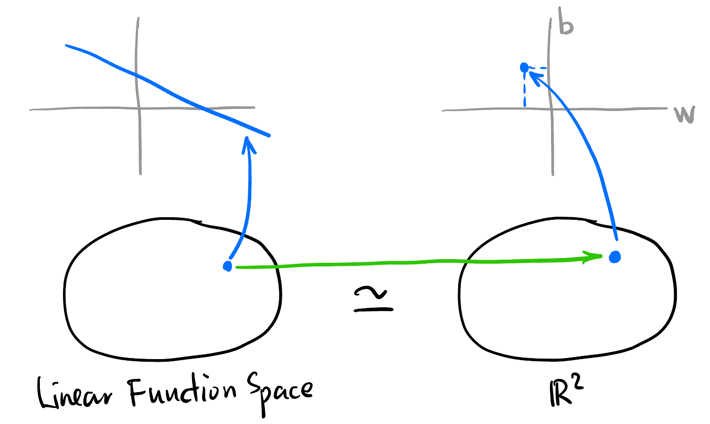
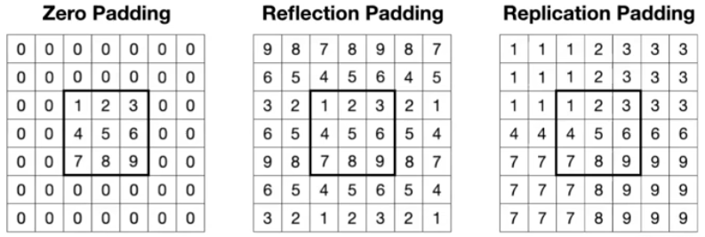

The Essence of NN 神经网络的本质
写这篇文章的动机: 学习神经网络的资源一般就是论文和书籍, 论文 not self-contained, 书籍 self-contained 但是会加入很多基础知识导致思维不连贯. 以下内容不会介绍任何数学 prerequisite, 只构建神经网络的完整思维框架.
Change of Mind
I don’t think view neural networks as black boxes does any help towards understanding and inventing new networks.
对一个神经网络来说, 我们要站在它的角度考虑 up to what extend it could tell the difference of data? 比如图像处理的神经网络, 它肯定不知道输入的是一张图, 如果是一段文字呢? 如果对于很多类型的数据它都不能区分, 说明这个网络非常 general 但性能肯定很差.
Questions
梯度下降和反向传播的关系是什么?
我们算梯度是在什么空间里面?
梯度下降在 Transformer 里面是如何工作的?
Neural Network is Not So Different
目标: 找一个映射.
世界上很多问题其实就是一个复杂的映射, 比如图像识别就是输入是图片, 输出是图片中的各种内容. 只不过这个函数存在于人类的大脑中, 无法写出显式的表达式. 人类想要强行把这个函数的表达式找到! 怎么找呢? 我们看到一棵树, 它为什么是一棵树呢? 每个像素都对它是一棵树做出了贡献, 但好像整体是一棵树又与单个像素毫无关系. 如果这个表达式存在, 那么它肯定非常复杂 (这里不能追求所谓的 “简洁与优美”). 但我们可以缩小一点范围, 用某种特定形式的函数来逼近所求. 也就是:
在一堆某种形式的映射里面 (参数化的函数空间 \(\mathcal{\hat{F}}\)) 找到一个映射 \(\hat{f}\) 来拟合一个复杂的映射 \(f: \mathcal{X}\to \mathcal{Y}\)
人们首先发现长成 Equation eq-fcnn 这种样子的映射仿佛有很强的拟合能力, 也就是不管你人脑中的模型有多复杂, 总是可以在下面形式的映射中找到合适的拟合.
\[ \hat{f}(x) = \sigma (W^{[L]} \cdots \sigma (W^{[2]} \sigma (W^{[1]} x + b^{[1]}) + b^{[2]}) + \cdots + b^{[L]}) \tag{1}\]
Equation eq-fcnn 很复杂对吧. 但是它可以用下面的图可视化出来:

这张图放在这里太 cliché 了, 但是我想说的是: 我们对它太过熟悉了, 以至于认为选择这种参数化方法是理所应当、独一无二的.
(FCNN, CNN, Transformer是同一层面上的概念? FCNN 能做到的事情很多, 但是太general 了, 所以先猜测什么样的结构能更好地揭示规律 (比如卷积 (尊重了 \(\mathcal{X}\) 结构从而很可能能加速神经网络发现规律的过程?), 再比如 GNN), 然后加入它们来 帮助神经网络发现规律? “Differential Model” 我感觉 FCNN 和 CNN 的本质是一样的? CNN 的本质是 pre-trained FCNN (或者说?))
事实证明形如神经网络的那些参数化函数空间能够拟合绝大多数的复杂映射, 所以无脑选择这样的 \(\mathcal{\hat{F}}\) 就行了.
如果一个问题可以用以下的框架里面描述, 那么这个问题就可以用神经网络来解决!
「复杂的映射」
「复杂的映射」这个思想可以刻画和描述所有以下问题:
- Classification 分类问题: \(\mathcal{Y}\) 仅仅是没有任何结构的集合.
- 请说出下面例子的 \(\mathcal{X}\) 和 \(\mathcal{Y}\):
- Image Classification: 输入一张图片, 判断是猫还是狗还是其它的.
- Face Detection: 输入一张图片, 判断有没有人脸.
- Handwriting Recognition: 输入一张手写的数字, 判断是几. (虽然 \(\mathcal{Y}\) 有序结构, 但不关心)
- \(\mathcal{X}\) 是所有图片的集合, \(\mathcal{Y}\) 是所有类别的集合.
- 请说出下面例子的 \(\mathcal{X}\) 和 \(\mathcal{Y}\):
- Regression 回归问题: \(\mathcal{Y}\) 有序结构. (Generally speaking, 有拓扑结构1)
- 请说出下面例子 [1] 的 \(\mathcal{X}\) 和 \(\mathcal{Y}\):
- Linear Regression: 给定一个标量场, 用线性标量场来拟合. (相当于指定了 \(\mathcal{\hat{F}}\))
- Quantization: 根据市场情况、历史数据等, 预测明天的股票价格.
- 预测某个视频观看者年龄.
- 根据发送的控制信号, 预测机械臂在三维空间的坐标.
- 根据历史湿度、温度等天气信息, 预测某地明天的温度.
- 请说出下面例子 [1] 的 \(\mathcal{X}\) 和 \(\mathcal{Y}\):
1 序结构诱导的拓扑称为 Alexandrov 拓扑.
参数化
如果一个函数空间的所有元素都能用形式上相同的式子表达 (这个式子里面有一些可变的参数), 那么这个函数空间就是参数化的.
Linear Regression 的参数化函数空间同构2于 \(\mathbb{R}^2\):

同构的 Mental picture
2 在拓扑向量空间的意义上: \[\{f: \mathbb{R}\to \mathbb{R} \mid f(x) = wx + b, w, b \in \mathbb{R}\} \simeq \{(w, b) \mid w, b \in \mathbb{R}\}\]
- 某个 CNN 的参数化函数空间同构于 \(\mathbb{R}^{200}\):
如何设计 \(\mathcal{\hat{F}}\) ?
即如何「设计」神经网络.
尊重 \(\mathcal{X}, \mathcal{Y}\) 中元素的结构
(升维、ask a lot of binary questions、编解码器、激活函数用什么类型 这些的联系是什么?)
(\(\mathcal{X}\) 为图片集合、文字、电路板、声音时分别有什么结构?)
(curse of dimension怎么解决?)
如果 \(\mathcal{X}\) 是一张图片的话, 我们有 “相邻” 点这种概念, 也就是说输入进 \(\hat{f}\) 的对象内部是有某些结构的, 但是 FCNN (a.k.a., MLP) 并不知道这些结构.
(引出 CNN 和 GNN)
如何找到 \(\hat{f}\) ?
即如何「训练」神经网络.
(梯度下降, 各种优化器)
(梯度消失问题怎么解决、正则化、ResNet, 为什么ResNet有效等等话题)
Gradient Descent 梯度下降
- Loss function 损失函数: 函数空间 \(\mathcal{\hat{F}}\) 映到 \(\mathbb{R}\) 的标量场 \(L: \mathcal{\hat{F}} \to \mathbb{R}\), 由于 \(\mathcal{\hat{F}}\) 参数化, 所以 \(L\) 也可以看作是 \(\mathbb{R}^n \to \mathbb{R}\) 的函数.
- \(L\) 标量场如何确定呢?
- 用训练集中的所有样本点取平均来确定标量场 (“GD”, 计算量太大).
- 通过 (不放回地) 抽取训练集中的一个 Mini batch 来估计标量场 (“SGD / Minibatch SGD”)
- \(L\) 标量场如何确定呢?
torch.optim其它优化器:- Momentum: 通过加入历史速度来模拟惯性 (Moving Average), 受噪声影响更小.
- AdaGrad(Adaptive Gradient Descent)
- 一些参数
- Learning Rate 学习率
杂项
我发现要以线性的顺序来写这篇 blog 的话会增加很多不必要的复杂性, 所以接下来我直接按照本人的学习顺序进行整理.
CNN Padding:
为了解决输入输出大小不一致的问题, 可以引入 Padding.

不同的 Padding, Pytorch 的默认为 zero padding (最常用 [2]) 要将各种问题设计成用机器学习的方法的 idea 非常重要. 它往往是一篇论文的核心 idea. 比如 word2vec 中提到的方法.